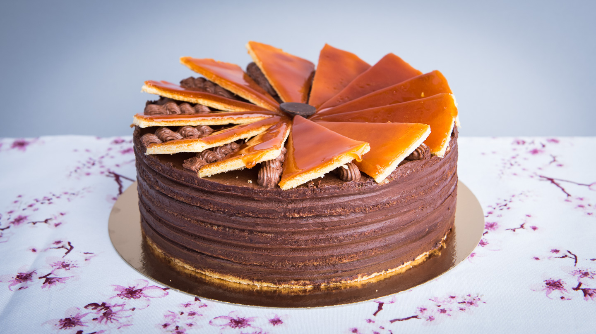

Dobos torta
A magyar desszert az egész világot meghódította. Különlegessége, hogy a tésztáját 6 darab vékony piskótalap alkotja, amit - az eredeti receptben - kakaóvajas krémmel töltenek meg. A dobostorta jellegzetességét a roppanós teteje adja, ami nehéz vállalkozásnak tűnik, de néhány apró szabály betartásával játszva készíthetjük el otthon.
A hungarikum Dobos C. József cukrász mesterműve, amit 1885-ben egy országos kiállításon mutatott be először a nagyközönségnek. A szóbeszéd szerint a torta különleges krémje a vajat köpülő fiú hibájából született, aki só helyett cukrot tett az edénybe, Dobos pedig ebből a hibából alkotta meg a fenséges krémet.

Hozzávalók
- Tészta:
- 6 darab tojás
- 35 g vaj
- 10 dkg liszt
- 10 dkg porcukor
- Krém:
- 20 dkg csoki (70% kakaótartalom)
- 28 dkg vaj
- 1 darab vaníliarúd
- 20 dkg porcukor
- 4 darab tojás
- Tető:
- 12 dkg kockacukor
- kevés vaj
Elkészítés
- Tészta:
- A tojásokat válasszuk szét.
- A sárgáját a porcukor felével keverjük habosra.
- A tojásfehérjét a megmaradt cukorral verjük nem túl kemény habbá, majd a sárgáját finom mozdulatokkal, az olvasztott vajjal együtt öntsük hozzá, alaposan keverjük el a tál tartalmát. A lisztet fokozatosan adagoljuk, keverjük el a tojásos masszában. Ebből az adagból 6 darab vékony lapot sütünk.
- A tésztalapok 200 fokos sütőben 10-15 perc alatt aranybarnára sülnek.
- Krém:
- A vaníliarúd magját kaparjuk ki, és keverjük habosra vajjal.
- A tojásokat a porcukorral vízgőz felett simára keverjük addig, míg csípős nem lesz a keverék. Ez annyit jelent, hogy az ujjunk hegyét beletesszük a tojásba, ha már meleg, csípni fog. Folyamatosan kevergetve hűtsük ki a tojást.
- A csokit vízgőz felett felolvasztjuk.
- Végül ezt a hármast - vajkrém, tojás és csoki - összekeverjük.
- Töltés:
- Öt lappal fogunk dolgozni, egyet félreteszünk a roppanós tetőhöz.
- Helyezzünk egy lapot a tálcára, alaposan kenjük meg krémmel, rátesszük a következő dobos lapot, töltjük, ismételjük addig, míg el nem fogy az összes lap. A maradék krémmel az oldalát is megkenjük a tortának.
- Tető:
- A kockacukrokat kis lángon, állandó keverés mellett felolvasztjuk, addig keverjük, míg megkapja világosbarna színét.
- A mázat a kihagyott tortalap közepére öntjük, lehetőleg gyors, de óvatos mozdulatokkal elsimítjuk rajta, majd vajba mártott késsel bejelöljük a szeleteket. Mikor már kihűlt, feldaraboljuk a jelölések mentén és a torta tetejére helyezzük őket.